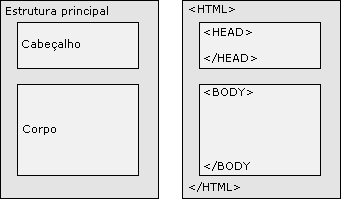

Estrutura HTML
Todo site deve ter uma estrutura básica que organiza o conteúdo e facilita a leitura do navegador e do usuário.
- header
- cabeçalho da página
- nav
- menu de navegação
- main
- conteúdo principal
- footer
- rodapé da página

Tags em HTML
As tags são os elementos básicos do HTML e servem para marcar e organizar o conteúdo da página.
Elas geralmente aparecem em pares: uma tag de abertura e uma de fechamento. Essas tags informam ao navegador o tipo de conteúdo que está sendo exibido, como títulos, textos ou imagens.
Por exemplo, um parágrafo é definido por uma tag específica que indica onde o texto começa e termina.
Semântica em HTML
Semântica significa dar significado ao conteúdo da página utilizando as tags corretas.
Isso ajuda o navegador, os mecanismos de busca e tecnologias de acessibilidade a entenderem melhor a estrutura do site.
Por exemplo, usar tags específicas para cabeçalho, navegação e seções torna o código mais organizado e fácil de interpretar.
Resumo
- Tags
- definem os elementos da página
- Estrutura
- organiza o conteúdo
- Semântica
- ajuda a entender o propósito de cada parte do conteúdo